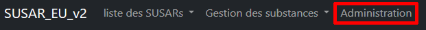
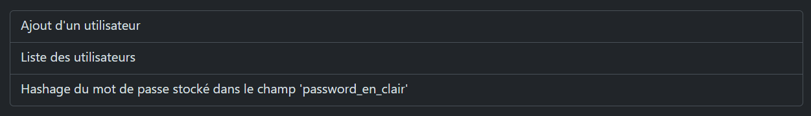
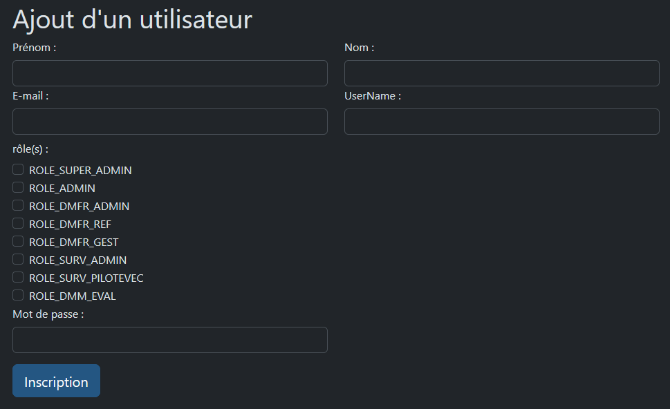
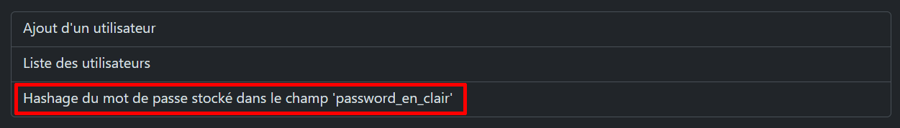
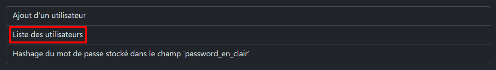
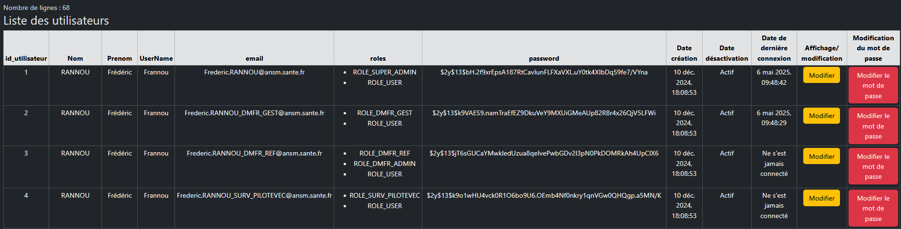

Mode opératoire de l’application SUSAR_EU_V2 - administration 2
I - Gestion des utilisateurs 2
A – Ajout d’un utilisateur – via l’écran dédié 2
Introduction
Cette partie de la documentation traite de taches réservées aux administrateurs de l’application comme la création des utilisateurs ou leur inactivation.
L’accès à ces écrans spécifiques nécessite un profil particulier et est accessible à partir de ce lien :
http://172.16.63.170/susar_eu_v2/public/index.php/admin_tbref
Ce lien est également accessible via la barre de navigation :

Les différents menus sont les suivants :

Dans le menu « Administration », sélectionner « Ajout d’un utilisateur » :

Par convention, le contenu des différents champs sont à saisir selon le formatage suivant :
Prénom : Première lettre en majuscule, le reste en minuscule.
NOM : Toutes les lettres en majuscule.
E-mail : Même formatage que dans groupwise : ex. Prenom.NOM@ansm.sante.fr
Username : première lettre du prénom en majuscule, suivi par les 7 premières lettres du nom de famille en minuscule.
Rôle(s) : Ils permettent de définir des profils et donc l’accès aux différentes pages de l’application.
Un utilisateur peut avoir de un à plusieurs rôles.
ROLE_SUPER_ADMIN et ROLE_ADMIN :
=> Gestion des utilisateurs
ROLE_DMFR_ADMIN et ROLE_DMFR_REF :
=> Écrans de bilan des imports CTLL.
ROLE_DMFR_GEST :
=> Liste des substances (pour requête EVDAS) et import d’un fichier CTLL.
ROLE_SURV_ADMIN et ROLE_SURV_PILOTEVEC
=> Gestion des substances SaMS et Mono et attribution aux évaluateurs et écrans de pilotage.
ROLE_DMM_EVAL:
=> Liste des susars importés et évaluation de ceux-ci.
Mot de passe : Il est stocké sous forme d’un hash dans la base de données. Il doit contenir au minimum 6 caractères.
Il est également possible, d’ajouter un ou plusieurs utilisateurs en se connectant directement à la base de données via un client SQL.
Dans la table user, il convient de dupliquer une ligne présentant des similarités avec le nouvel utilisateur (ex. même rôles, ou même direction/pôle), puis d’y intégrer les données propres à ce nouvel utilisateur (nom, prénom, user_name, … ). Enfin il faut indiquer le password en toutes lettres (non hashé), dans la colonne password_en_clair.
Les nouvelles lignes peuvent également être crées en important un fichier .csv.
Il faut ensuite lancer le script de hash du mot de passe grâce au menu suivant :

En sélectionnant le choix suivant, dans le menu d’administration …

… On a accès à la liste des utilisateurs.

Il est alors possible de modifier Nom, Prénom, UserName, eMail et rôles grâce au bouton jaune « Modifier ».
Pour modifier le mot de passe utilisateur, il faut cliquer sur le bouton rouge « Modifier le mot de passe ».